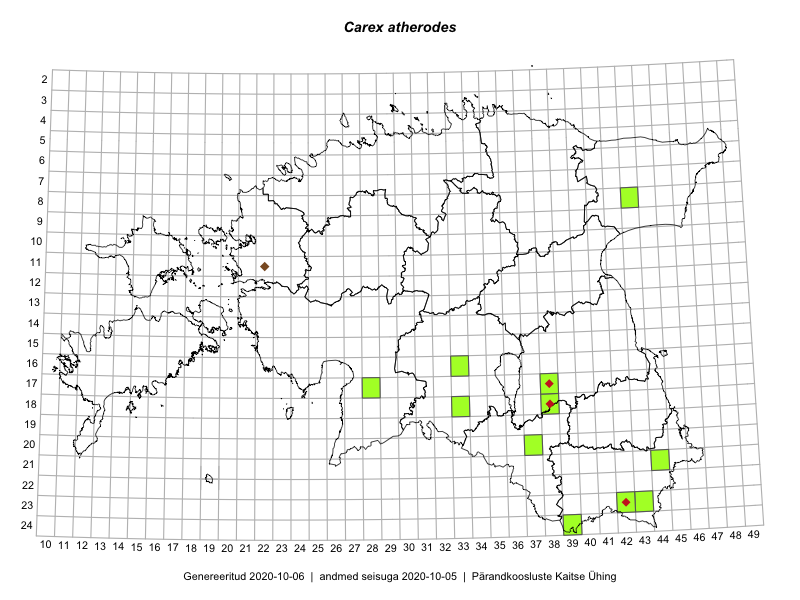

Carex atherodes
Uuendatud: 2016-12-01
Kaardile koondatud taksonid: Carex atherodes Spreng.

Kaart põhineb 9 kirjel, neist vaatlusi 6 ja eksemplare 3.
Viited andmebaasikirjetele
- Ott Luuk, Peedu Saar: 2015-08-12: 23-43: ala
- Ott Luuk, Peedu Saar: 2015-08-12: 23-43: GPS punkt
- Toomas Kukk, Peedu Saar, Kersti Püssa, Rein Kalamees: 2014-06-09: 24-39: ala
- Toomas Kukk, Peedu Saar, Kersti Püssa, Rein Kalamees: 2014-06-09: 24-39: GPS punkt
- Meeli Mesipuu, Timo Luhamäe: 2016-06-13: 18-38: ala
- Timo Luhamäe, Meeli Mesipuu: 2016-06-13: 18-38: GPS punkt
- Ott Luuk: 2014-06-09: 24-39: GPS punkt
- Ott Luuk: 2014-06-09: 24-39: GPS punkt
- Ott Luuk: 2014-06-09: 24-39: GPS punkt